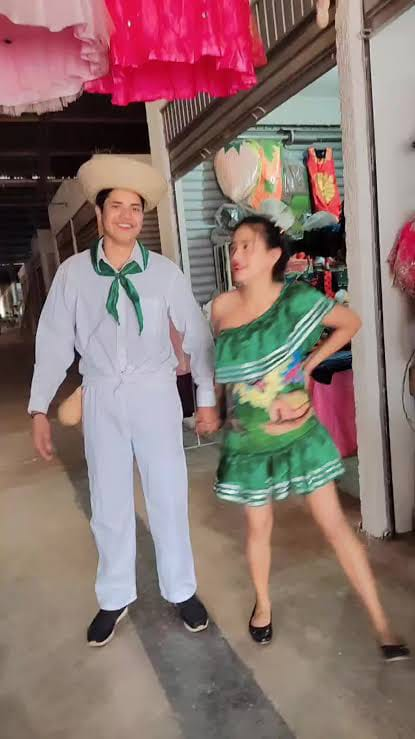
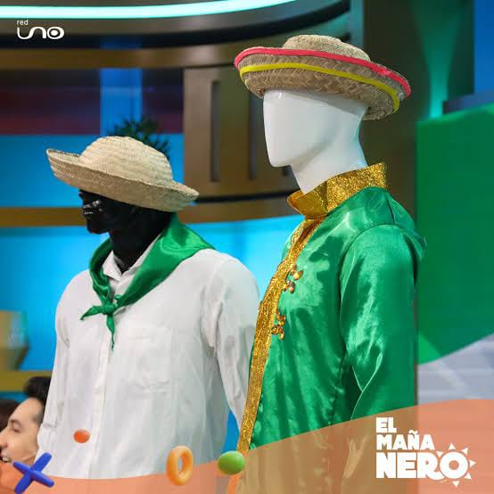
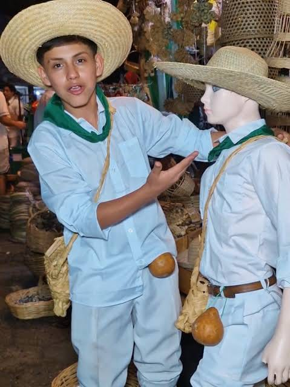
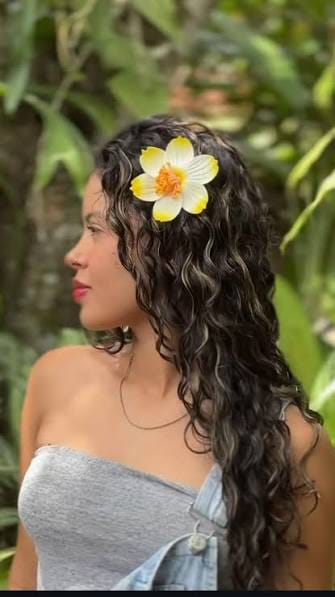

🌿 Vestimentas Tradicionales de Santa Cruz 🌺
Prendas que representan la cultura y la identidad cruceña
La vestimenta tradicional cruceña
Santa Cruz cuenta con una gran diversidad cultural que se expresa en las costumbres y vestimentas de sus pueblos. El clima cálido de los llanos influye en el uso de prendas frescas, ligeras y cómodas. Una de las prendas más conocidas en las presentaciones folclóricas es el tipoy.
Los sombreros, pañuelos, camisas y otros accesorios también forman parte de algunas expresiones tradicionales de la región. Estas prendas representan la historia, la identidad y las tradiciones de sus habitantes.

1. Tipoy
Es un vestido largo, suelto y generalmente colorido. Puede presentar detalles decorativos y diseños sencillos. Su forma amplia permite mayor comodidad en el clima cálido y es una de las prendas más representativas de las presentaciones culturales cruceñas.

2. Sombrero de sao
Es un sombrero elaborado artesanalmente con fibras vegetales de la palmera conocida como sao. Su función principal es proteger del sol. También representa los conocimientos artesanales y las tradiciones de los llanos cruceños.

3. Pañuelo
Es un accesorio que puede acompañar la vestimenta en bailes, fiestas y celebraciones. Se utiliza de diferentes maneras y sus colores aportan movimiento y alegría a las presentaciones tradicionales.

4. Camisa y pantalón
En algunas representaciones tradicionales, los hombres utilizan camisas frescas y pantalones de corte sencillo. Son prendas cómodas que se adaptan al clima y a las actividades de la región.
5. Abarcas o sandalias
Son tipos de calzado sencillos y prácticos que pueden utilizarse en distintas comunidades. Su diseño permite caminar con comodidad y responde a las necesidades de la vida cotidiana.

6. Accesorios y detalles
En las celebraciones se pueden añadir adornos, pañuelos y otros elementos propios de cada comunidad. Estos detalles complementan la vestimenta y muestran la diversidad de las costumbres locales.
🌺 ¿Qué representa la vestimenta cruceña?
La vestimenta tradicional de Santa Cruz representa la identidad, la alegría y las costumbres de sus habitantes. Sus prendas frescas muestran la adaptación al clima cálido, mientras que los tejidos, sombreros y accesorios reflejan los conocimientos artesanales y la diversidad cultural del departamento.
💡 Dato curioso
El sombrero de sao es reconocido por su elaboración artesanal con fibras vegetales. Su fabricación forma parte de conocimientos tradicionales que se transmiten entre generaciones. Además, el tipoy es una prenda muy conocida en las expresiones culturales cruceñas, aunque no representa la vestimenta diaria de todas las mujeres del departamento.
Guarda las fotografías en la misma carpeta que este archivo HTML.